Кульман → CAD → BIM →
Вайб-проектирование
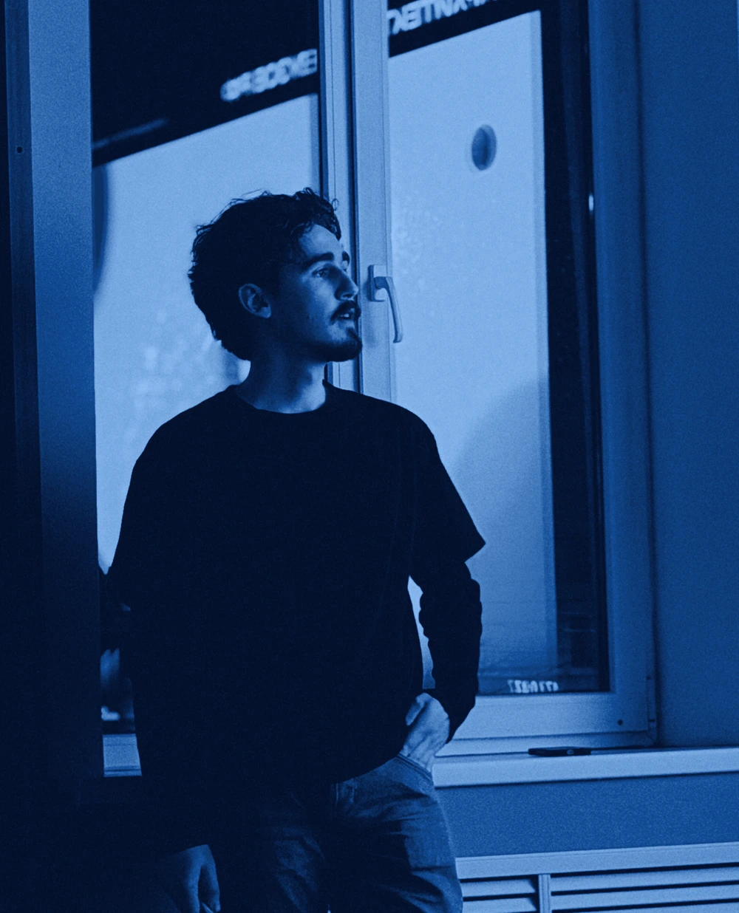
Ярослав
Уваровский
- Архитектор, руководитель AI-направления ландшафтного бюро DEREVO PARK
- Преподаватель школы Арт.Бродский по нейросетям
- Автор Telegram-канала «nakarandashé» про ИИ для архитектора
- Студент магистратуры СПбГАСУ, профиль «Дизайн архитектурной среды»
- Бакалавр КубГТУ по направлению «Строительство», профиль «Промышленное и гражданское строительство».
Разговор с залом
Что мешает применять ИИ в вашем проекте?
Вспомните последнюю работу. На каком шаге вы хотели попробовать ИИ и что вас остановило?
Выбор инструмента
Задачу ставит
архитектор
Какой результат нужен?
Чем хотим управлять?
Как проверим результат?
Выбор инструмента
Начните с задачи
Визуализация
Как управлять
изображением?
Редактирование в Photoshop и апскейл в ComfyUI.
Визуализация
SINTEZ в Photoshop
Как использовать генерацию и редактирование прямо в рабочем файле?
Визуализация · Photoshop
Попробовать
SINTEZ
Наведите камеру на QR-код, чтобы открыть регистрацию.
Реферальный код derevopark
Визуализация
Апскейл в ComfyUI
Как изменяются детали при увеличении визуализации жилого квартала?
Свой инструмент
Участок в
Grasshopper
Застройка, рельеф и пешеходные связи на набережной Амура.
Свой инструмент
Анализ участка
Застройка, улицы, рельеф и пешеходные связи вокруг участка. Что меняется при настройке охвата?
Конкурс Брусники · Евроберег, Новосибирск
Что можно узнать по одной точке?
Мы втроём проектируем общественную уборную на набережной Оби. От организатора получили условную точку размещения.
По OpenStreetMap проследили подходы из квартала. По архиву Open-Meteo изучили ветер и снег, а по высоте окружающих зданий оценили сезонное затенение.
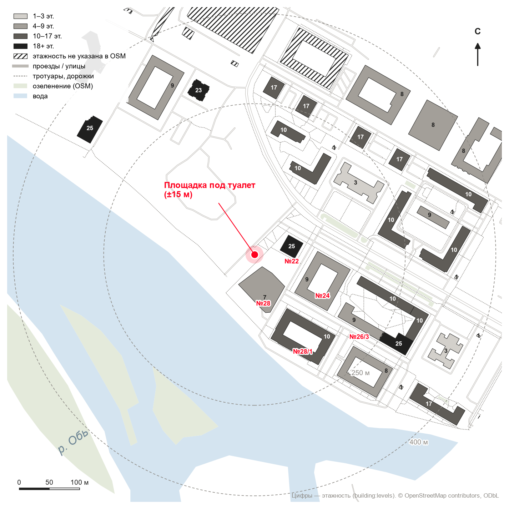
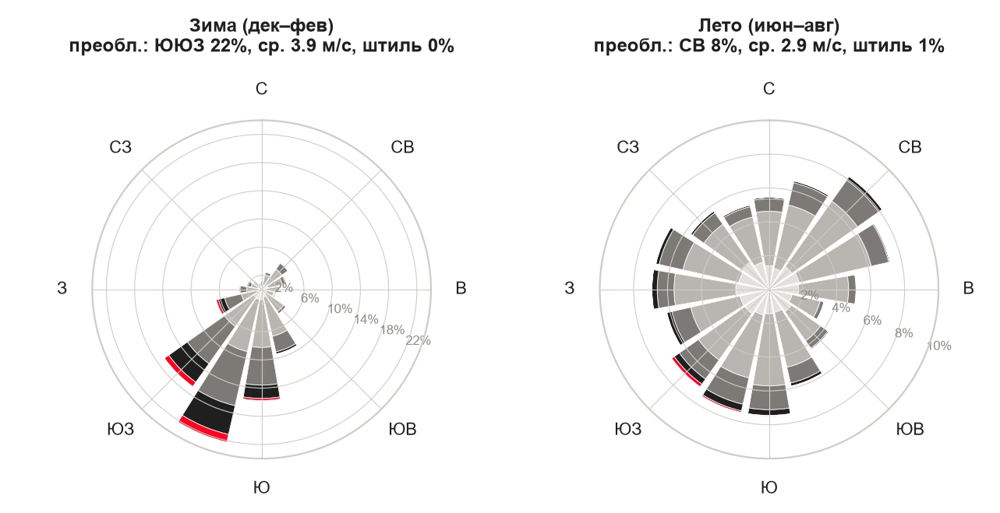
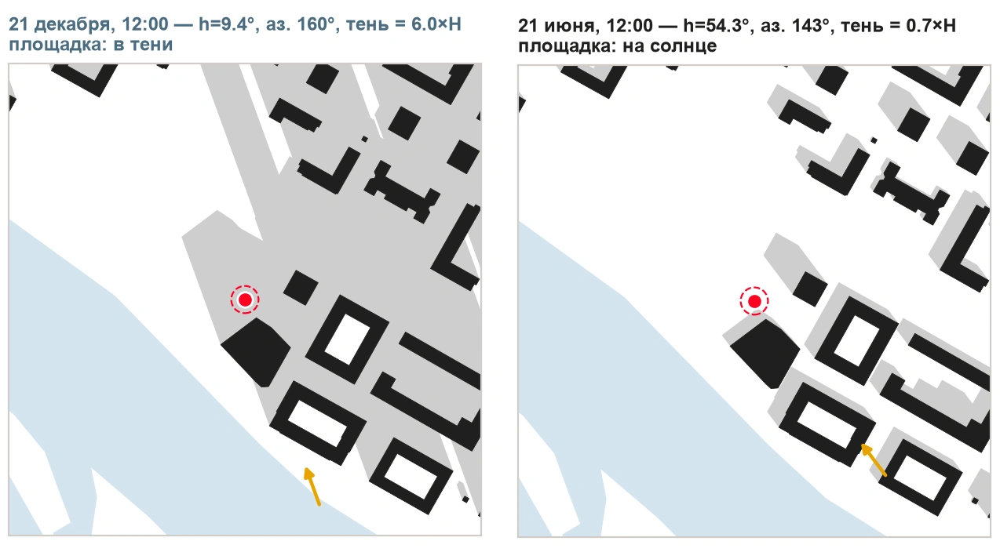
Конкурс Брусники · первый этап
От «Зенита» к «Дуге»
По схеме участка наметили подходы посетителей и персонала. В брифе закрепили сценарий входа с дорожки под навес.
В модели «Дуга» керамическая стена поворачивает к тамбуру, а кровля повторяет изгиб. Свет в кабины и холл попадает через колодцы в покрытии.
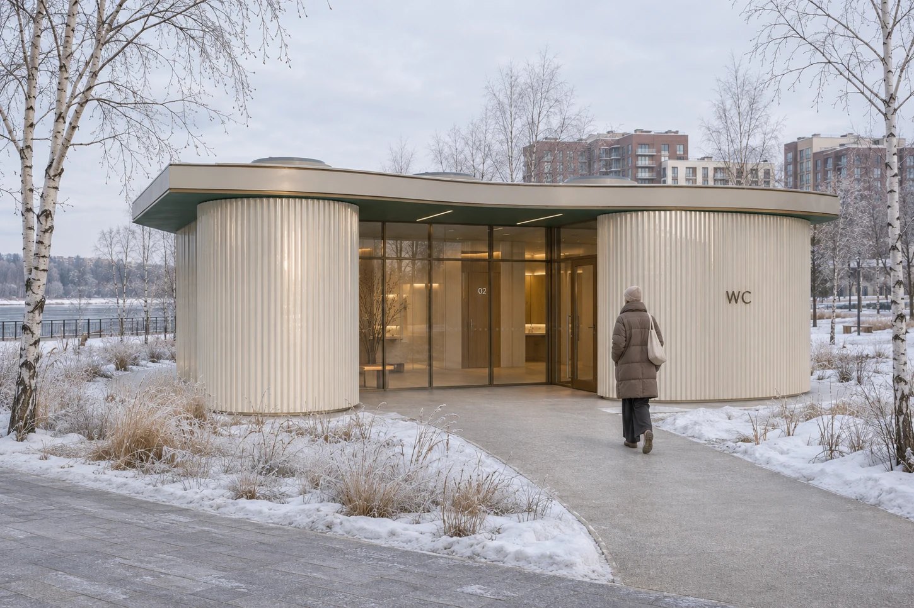
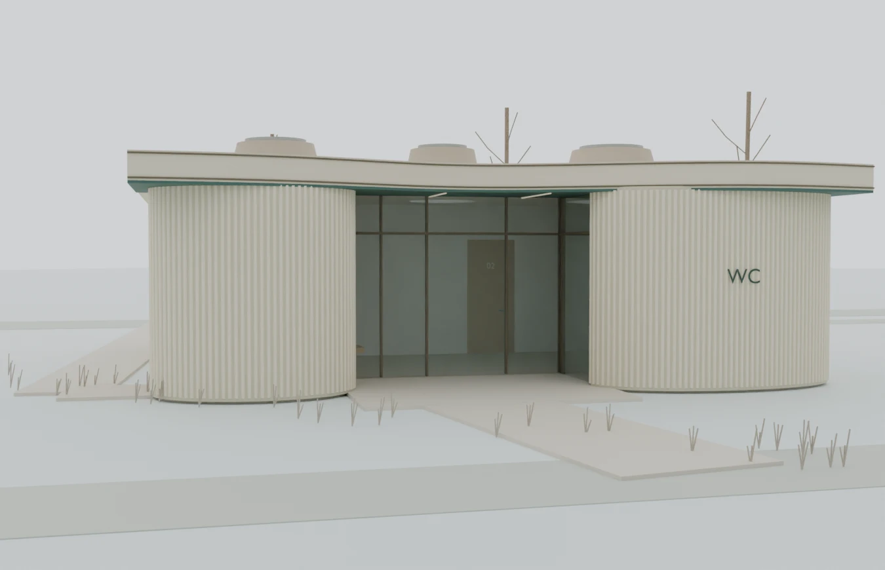
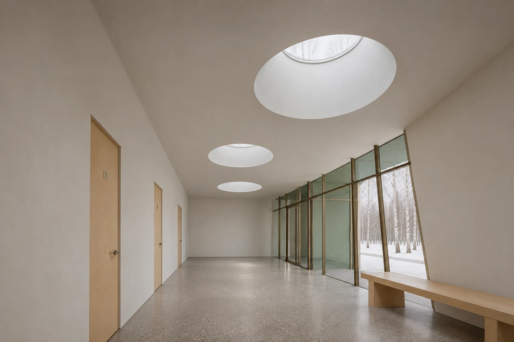
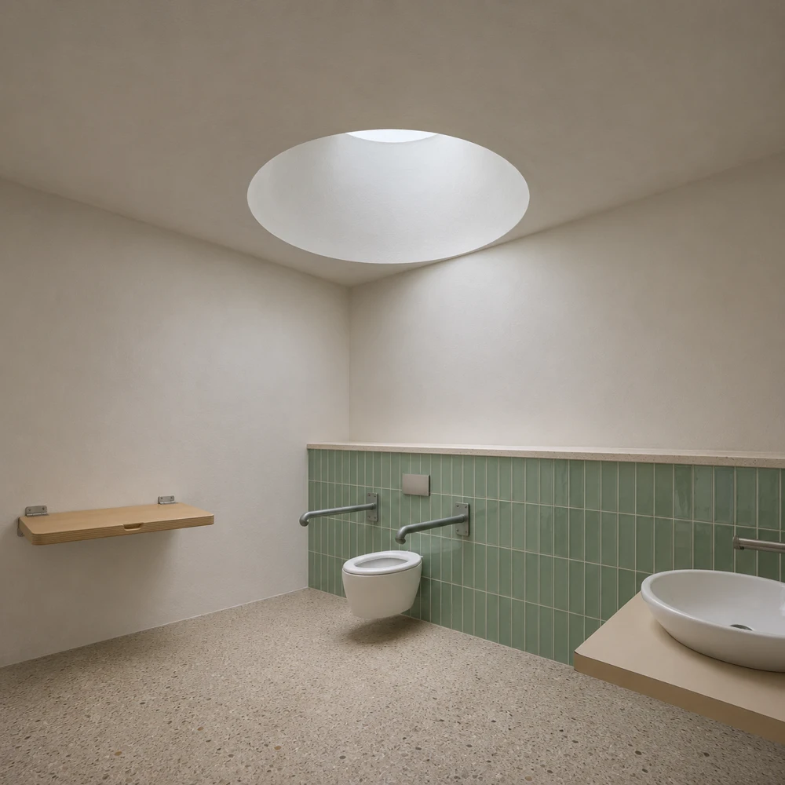
Конкурс Брусники · эскизный вариант
«Три фонаря»
Две стены в зелёной плитке расходятся у входа. Между ними можно укрыться от дождя, а сквозь стекло с дорожки виден тамбур.
У каждой кабины свой световой фонарь. Со стороны парка все три видны над козырьком.
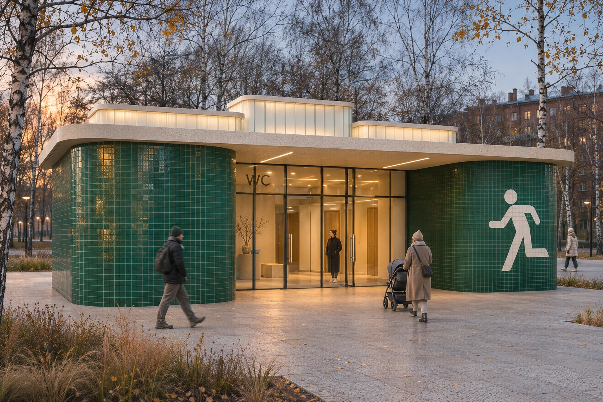
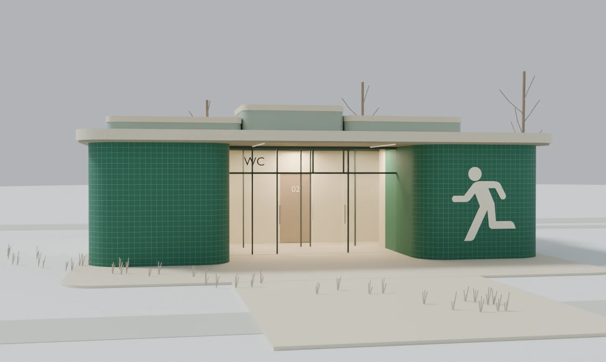
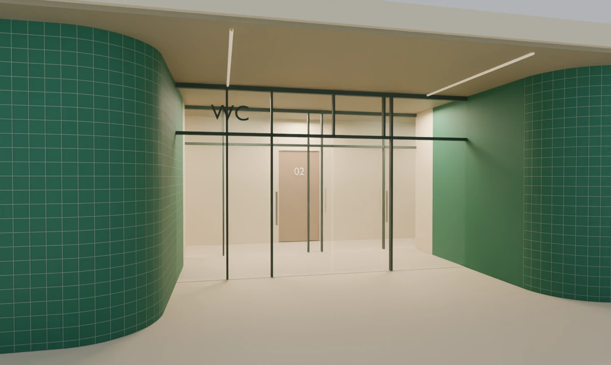
ИИ в профессиональном софте
Внутри Rhino
и Revit
Три башни, фасад, взрыв-схема. От задания к графу, модели и чертежу.
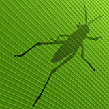
GrasshopperRevitИИ в профессиональном софте
Три башни
Claude через MCP собирает ансамбль по заданию. Высоту, поворот и сужение башен можно менять в графе.
Вайб-проектирование
GPT-6 Astra → MCP → Rhino
БЦ
«Сенатор»
Какие размеры фасада нужно сверить с исходными данными?
ИИ в профессиональном софте
Взрыв-схема в Revit
Как разложить здание по уровням и собрать из этих видов лист A1?
ИИ в профессиональном софте
Собор в Revit
Как из одной команды строится модель Троицкого-Измайловского собора?
Вайб-проектирование
RhiGhAI · Rhino и Grasshopper
ЦВЗ
«Манеж»
Что произойдёт с портиком, если изменить число колонн в графе?
Расширение архитектурной практики
Архитектура становится шире
Архитектурная модель помогает объяснить, как устроено здание. Посмотрим, как об этом рассказать в коротком ролике, а о реставрации — через игру.
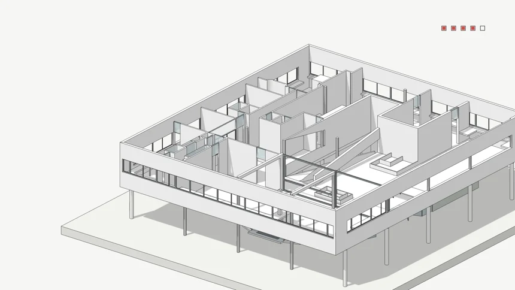
Расширение архитектурной практики
Villa Savoye
Сценарий автора и DWG-модель виллы стали основой анимированного архитектурного разбора с Opus 5.5.
Архитектура в коротком видео
Как рассказать о цифровом двойнике города?
Три выпуска об АГР-моделях Москвы. Начинаем с городской модели и доходим до одного перехода глазами робота-курьера.
Расширение архитектурной практики
Игра «ПРО
РЕСТАВРАЦИЮ»
Как рассказать о реставрации через игру? Посмотрим фрагмент проекта с участием СПбГАСУ.
Расширение архитектурной практики
Попробовать игру
Завершение
Что попробуете первым?
Возьмите одну задачу из своего проекта. Сделайте её привычным способом и с помощью ИИ. Сравните оба результата и решите, какой приём стоит повторить.
Вопросы?
Мой Telegram-канал · nakarandashé
Краснодар · на следующей неделе
Экскурсии в проектные
институты и бюро
Программу экскурсий опубликуем в Telegram-канале школы.
Презентация по ссылке
Листайте слайды, запускайте видео и возвращайтесь к примерам.